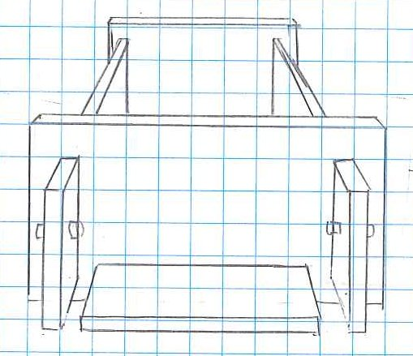
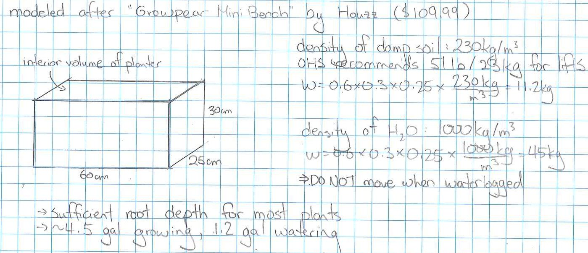
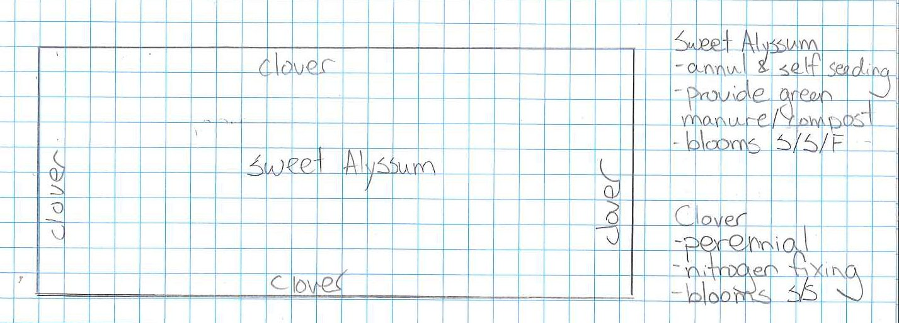
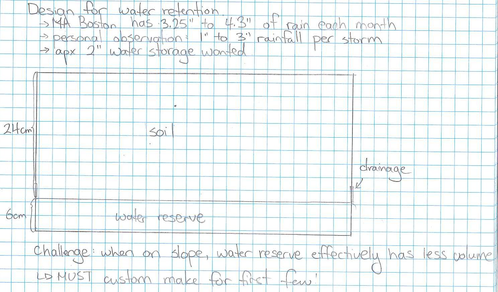

See my resume
highlights:
- Led project in analysis of network traffic using machine learning in corporate environment, leading to filing an intellectual property patent with Google
- Ran a start-up in mobile-centric software for trucking navigation and dispatching
Plantile
a project to terraform suburban roofs
Motivation
- For plants: reclaime green space lost to roofs
- For the bees: no-mainance flowers to fight colony collapse and fight declining pollinator populations
- For the sewers: reduce runof by capturing and utilizing rain water
- For the house: protect the shingles from sun and prolong their life
Requirements
Be no-maintenance for 5 years
- Can withstand winds in MA even on a 45-degree sloped roof
- Drought tolerant
- Perannuals with nitrogen fixing plants.
Be better than a bare roof
- Existing shingles need no additional water-proofing
- Protect the shingles from the sun
Be portable
Be afforable
- Keep cost of materials below $30 per planter
Current Design
Planter Design

Stability on Roof

Drainage to Keep the Roof Dry

Portable Weight

Plant Choice

Water Retention

Open Questions
"What is the best material to make the planters from?"
- current plan is to make the planter out of foam for insulation and weight
"What are people's priorities?"
"How much additional static load can a roof take? How heavy is a planter once it's saturated with water? Can a roof take that plus snow?"
"Why is this better than standard planters?"
"How do I avoid having to prune the roots?"
- possible solutions: air pruning (soft sided fabric container prune roots with air) and light pruning (lightly colored containers prune roots with light)
- ongoing experiment (June 2017 to Aug 2017): drill drainage holes in the planter and line planter with cotton cloth